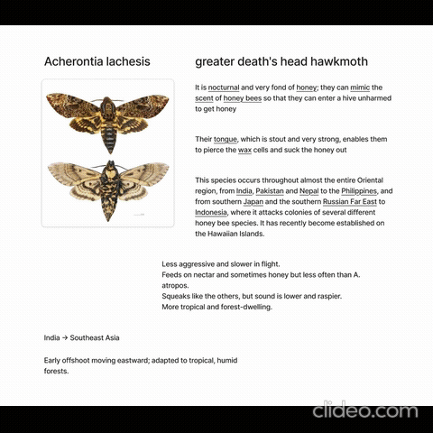

Research & Ideation Phase

Research & visual references for character inspiration

Sketching, ideation, and exploring character forms
The character design process began with research and visual references, followed by sketching and ideation to explore personality, form, and expression.